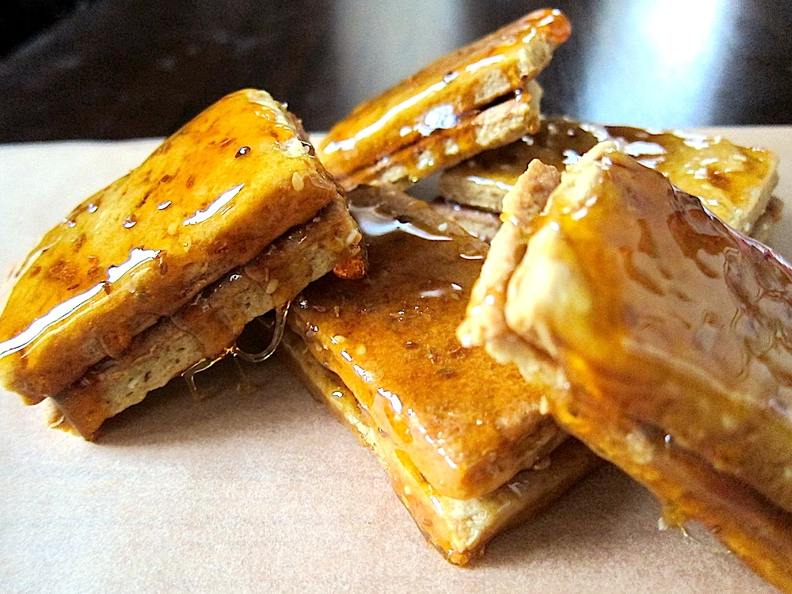
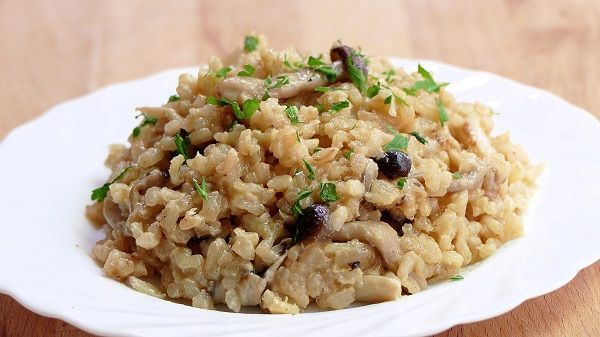
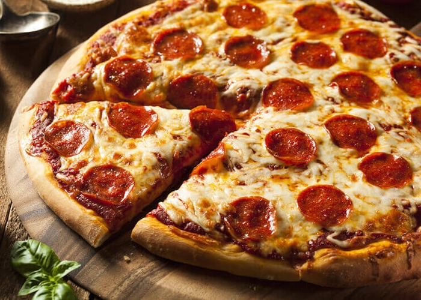

Hola bienvenidos al menu de platillos de Italia.
Platillo |
Imagen |
Informacion |
| 1-Carpaccio. |
 |
Esta plato consiste en láminas de carne o pescado crudo macerados con zumo de limón, aceite de oliva o queso. |
|
2-Rissotto.
|  |
Esta típica comida italiana es a base de arroz y queso, sin embargo existen diferentes tipos de risottos con distintos ingredientes que se le incorporan al arroz. |
|
3-Pizza.
|
 |
La pizza consiste en una masa de pan de forma generalmente redonda cubierta con salsa de tomate y otros ingredientes como queso, jamón, champiñones, aceitunas y demás. |